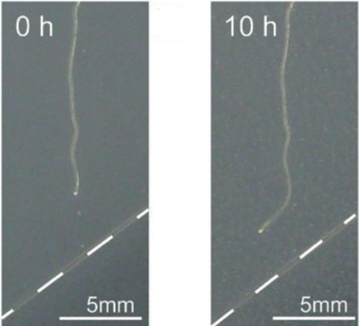
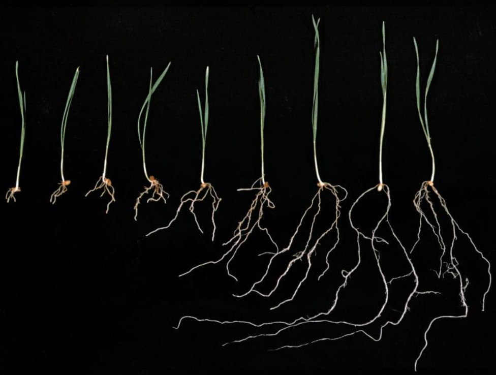

Hydrotropism, the directional growth of plant roots in response to water gradients, plays a crucial role in enabling plants to efficiently locate and access water sources in soil. In recent years, significant progress has been made in unraveling the mechanisms underlying hydrotropism perception, its interaction with other tropisms, and its potential implications for agricultural practices.
Hydrotropism Mechanisms
Recent research has shed light on the mechanisms underlying hydrotropism, the phenomenon by which plant roots orient their growth towards water sources in soil. The mechanisms of water finding in plants vary across species and depend on their water requirements and genetic factors. Studies, particularly focused on the model plant Arabidopsis thaliana, have revealed crucial insights into how roots perceive and respond to water gradients.
One key finding is the involvement of the elongation zone in root sensing, where changes in water potential across the root are believed to trigger mechanosensitive ion channels. These ion channels, possibly responding to alterations in cell volume, play a pivotal role in initiating the hydrotropic response. Moreover, the role of membrane proteins, particularly aquaporins, has emerged as significant in hydrotropism. Aquaporins are membrane channels facilitating the transport of water and small molecules. Research suggests that these proteins may be involved in sensing water gradients and regulating water uptake in response to changing environmental conditions.

Interaction with Other Tropisms
Hydrotropism and gravitropism, two fundamental tropisms governing root growth, interact closely to regulate the spatial orientation of plant roots in response to environmental cues. Gravitropism typically dictates the default growth direction of roots, with roots growing downwards in response to gravity. In contrast, hydrotropism enables roots to actively seek out water sources by directing their growth towards regions of higher water availability in the soil.
Some plant species rely on auxin gradients for both hydrotropism and gravitropism, wherein the distribution of the hormone auxin plays a crucial role in determining the direction of root growth in response to both water and gravity stimuli. However, other species exhibit independent responses to hydrotropism and gravitropism, suggesting distinct signaling pathways governing each tropism.
Reactive oxygen species (ROS) have emerged as key regulators in the interplay between hydrotropism and gravitropism. ROS, including molecules like hydrogen peroxide, are known to modulate various aspects of plant growth and development, including root tropic responses. Studies have implicated ROS in mediating both hydrotropic and gravitropic bending of roots, indicating the existence of complex regulatory networks involving ROS signaling pathways. Further research is needed to elucidate the precise mechanisms by which ROS influence root tropic responses and the extent of their involvement in coordinating the interaction between hydrotropism and gravitropism in plants.
Implications for Agriculture
Understanding hydrotropism holds immense potential for revolutionizing agricultural practices, especially in regions prone to drought and water scarcity. By deciphering the mechanisms underlying hydrotropic responses in plants, researchers aim to develop strategies that enhance water use efficiency and promote drought resilience in crops. The ability of plant roots to actively seek out water sources through hydrotropism offers a promising avenue for improving agricultural productivity under water-limited conditions.
One promising application of hydrotropism in agriculture lies in optimizing water management practices. Conservation tillage, which minimizes soil disturbance and enhances soil water retention, could be further optimized by leveraging the hydrotropic abilities of plant roots. By encouraging deeper and more efficient root growth towards areas of higher soil moisture, conservation tillage systems could potentially improve crop performance and yield stability in water-stressed environments.
Additionally, deficit irrigation systems, such as partial root zone drying (PRD), could benefit from a deeper understanding of hydrotropism. By strategically manipulating water availability to different parts of the root system, PRD aims to balance water conservation with crop productivity. Harnessing the hydrotropic responses of plant roots could enhance the efficacy of PRD systems, allowing crops to better cope with water limitations while maintaining yield potential.

Future Directions
Despite considerable advancements in unraveling the mysteries of hydrotropism, numerous avenues for future research remain to be explored. One pressing question pertains to the nature of the hydrotropic signal that triggers root responses. While changes in water potential are believed to play a critical role, the specific molecular mechanisms responsible for detecting and transducing these signals remain elusive. Further investigation into the molecular pathways involved in hydrotropism perception is essential for gaining a comprehensive understanding of this phenomenon.
Moreover, the interaction between hydrotropism and other environmental stimuli presents a fascinating area for future inquiry. While hydrotropism primarily governs root growth in response to water gradients, its coordination with other tropisms, such as phototropism and gravitropism, remains poorly understood. Elucidating the crosstalk between hydrotropism and these tropic responses will shed light on the integrated mechanisms regulating plant growth and development in dynamic environments.
Advanced imaging techniques and genetic manipulation tools offer promising avenues for advancing our understanding of hydrotropism. Live-cell imaging technologies, such as confocal microscopy and fluorescence resonance energy transfer (FRET), enable real-time visualization of molecular events during hydrotropic responses. Additionally, genetic approaches, including mutant analysis and gene editing technologies like CRISPR-Cas9, facilitate the identification and characterization of key genes and signaling pathways underlying hydrotropism.
Conclusion
In conclusion, hydrotropism represents a fascinating aspect of plant physiology with broad implications for both fundamental research and agricultural practices. Continued investigation into the mechanisms of hydrotropism perception and its interaction with other tropisms will deepen our understanding of how plants respond to water availability. Harnessing the hydrotropic abilities of plant roots may offer innovative solutions for improving crop resilience to drought stress and enhancing agricultural sustainability.